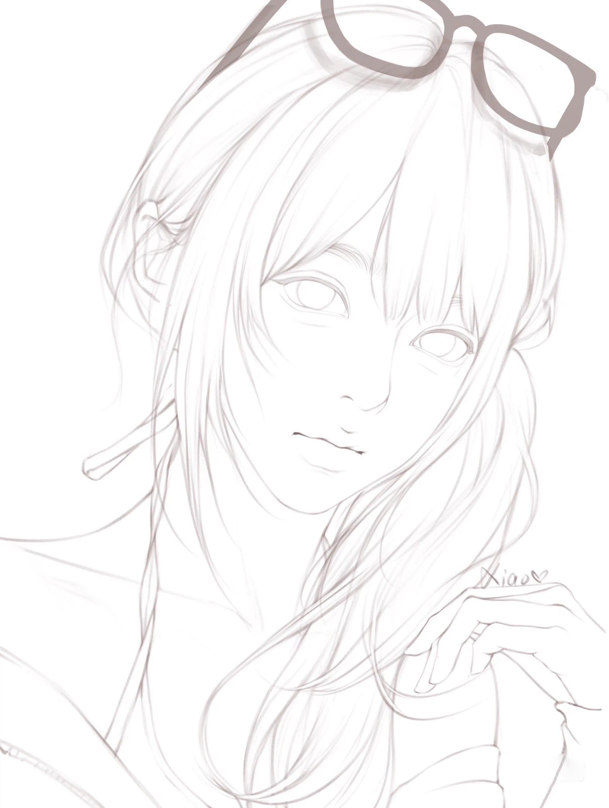
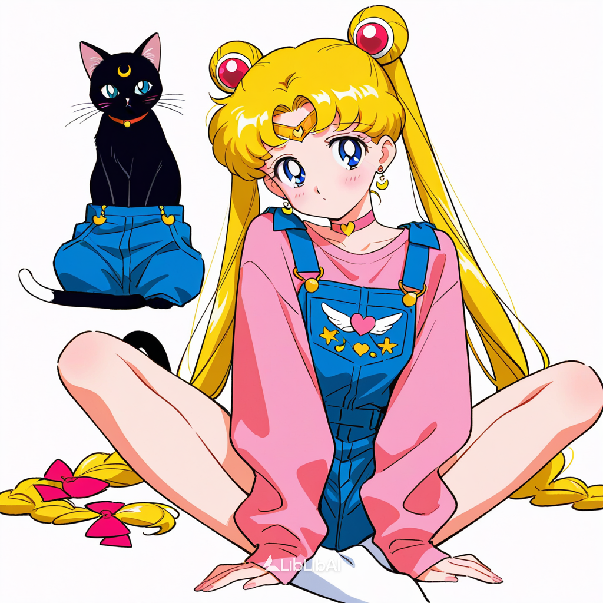
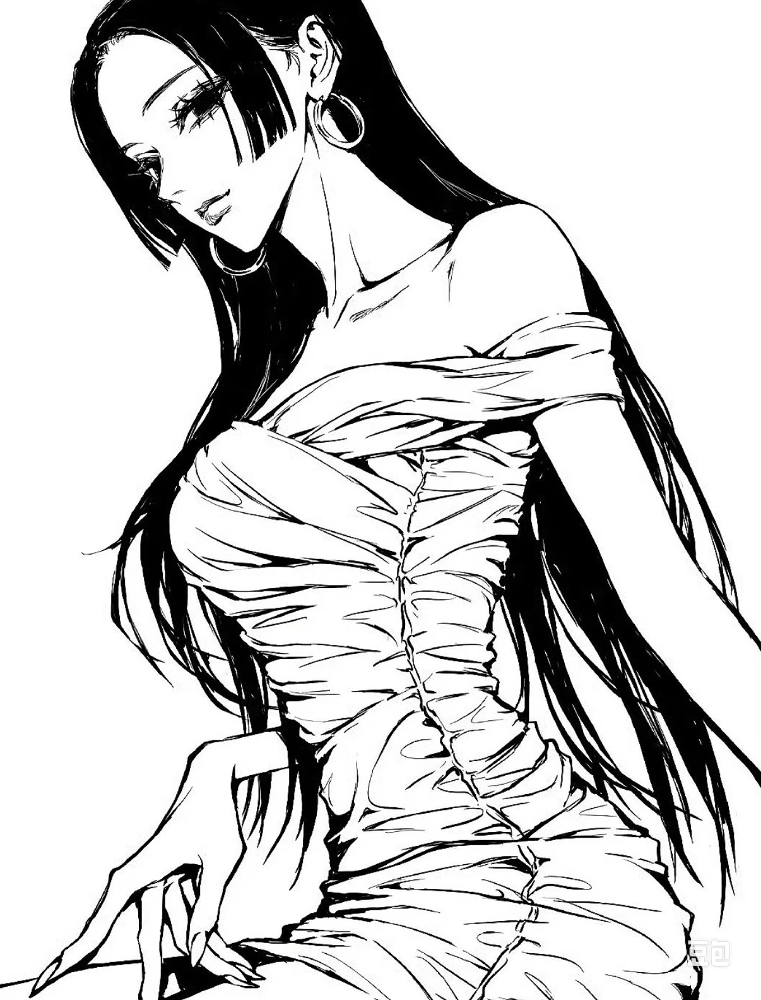
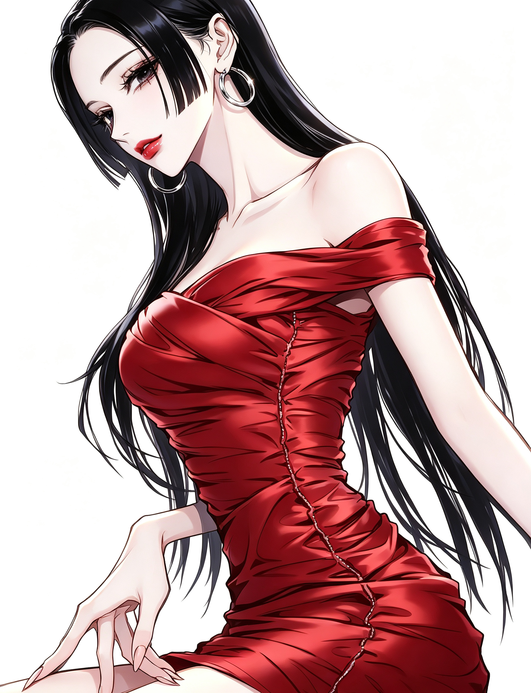
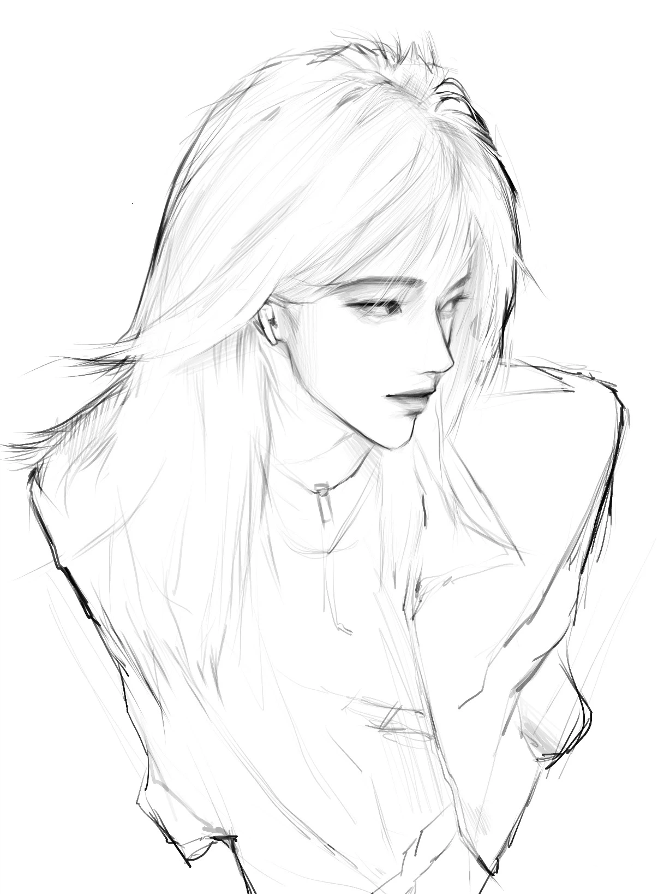
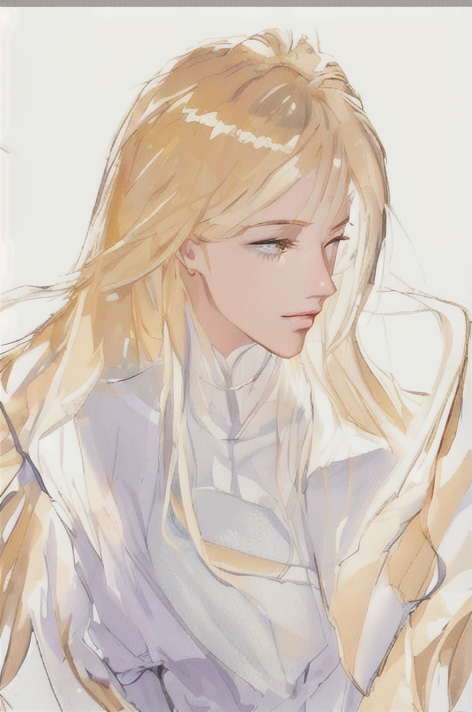

PROJECT OVERVIEW
项目概述
以角色线稿作为构图与结构基准，引入参考图作为风格来源，通过 AI 风格迁移将参考图的人物特征、服饰与视觉风格迁移到线稿上，生成保持线稿结构、融合参考风格的角色成图。
VISUAL EXPLORATION 06 · 2026 · CHARACTER AI
AI 角色风格迁移设计
AI-ASSISTED CHARACTER STYLE TRANSFER
以角色线稿为结构基础，结合参考图的人物特征与风格，通过 AI 将参考图的风格迁移到线稿上，输出保持线稿构图、融合参考风格的角色成图。

PROJECT OVERVIEW & OBJECTIVE
PROJECT OVERVIEW
以角色线稿作为构图与结构基准，引入参考图作为风格来源，通过 AI 风格迁移将参考图的人物特征、服饰与视觉风格迁移到线稿上，生成保持线稿结构、融合参考风格的角色成图。
PROJECT OBJECTIVE
探索 AI 在角色设计中的风格迁移能力：在锁定线稿构图与人物结构的前提下，快速套用不同参考图的风格，批量产出差异化角色视觉，提升角色概念探索效率。
PROJECT BACKGROUND & AI TECHNOLOGY
角色设计中，线稿到成图的上色与风格化环节耗时较长，且风格统一难度高。
本项目以角色线稿锁定结构与姿态，以参考图提供风格方向，通过 AI 风格迁移快速生成融合二者的角色成图，用于角色概念阶段的风格探索与批量产出，显著提升角色设计效率。
TOOLS
GENERATION
以线稿图为结构输入，配合风格参考图与提示词，由 AI 生成融合线稿结构与参考图风格的角色成图。
WORKFLOW
WORKFLOW
SCROLL →
确定角色构图与结构
选定目标风格与人物特征
线稿融合参考风格生成
结构与特征比对修正
多组结果对比筛选
CHARACTER CASES
每组展示：线稿 → 参考图 → AI 风格迁移成图。






CONCLUSION
AI-ASSISTED CHARACTER STYLE TRANSFER
本项目展示了 AI 在角色设计中的风格迁移能力：以线稿锁定结构，以参考图提供风格方向，快速生成融合二者的角色成图，有效提升角色概念阶段的风格探索与批量产出效率。